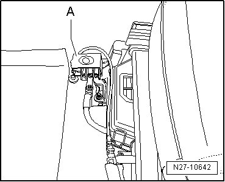

Battery with Cut-off Relay
Battery with Cut-off Relay
All Touaregs produced from 11/2004 have a battery cut-off relay - A - installed to protect the battery during transport.

The battery cut-off relay protects the battery from being discharged by unnecessary electrical consumers while being transported from the factory and the dealer for delivery to the customer.
The battery cannot be charged via the jump start point in the engine compartment if it must be charged before removing the cut-off relay. The battery cut-off relay disconnects the ground connection to the battery after a maximum of 10 minutes, preventing the battery from being charged. The battery can only be charged completely by following the instructions below.
Remove the battery cut-off relay according to the removal instructions before delivering to the customer (delivery inspection). Removal is described in TPL number 2007439 under the title "Engine does not start/transport protection active" or in ServiceNet.
• The battery cut-off relay is reusable and is necessary for vehicle production. It must be sent back immediately after removal. The return procedure is described in ServiceNet.